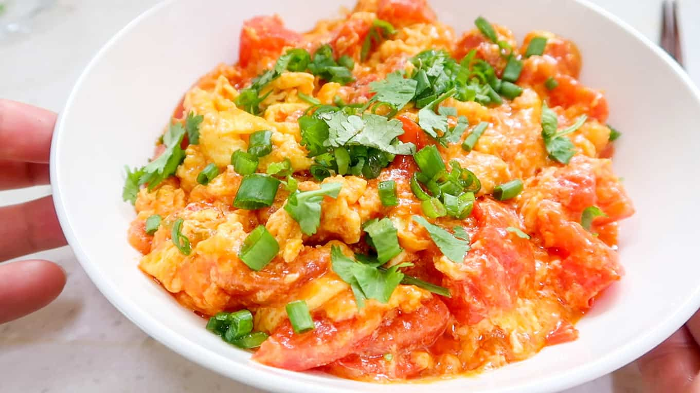

Garlic bread

Description
Tomato egg scramble is a simple dish consisting of only four ingredients. This is an ideal breakfast for someone looking to add a healthy twist to a classic dish.
Ingredients
- neutral oil
- 3 eggs
- 3 tomatoes, minced
- salt, to taste
Instructions
- Heat pan on medium-low heat
- Add oil to pan once the pan is hot
- Crack eggs in a bowl. Mix well with a fork
- Add the minced tomatoes to the egg mixture
- Slowly add egg mixture to the pan.
- Constantly stir the egg mixture inside the pan to create a fluffy texture. Cook until the eggs are no longer runny. Enjoy